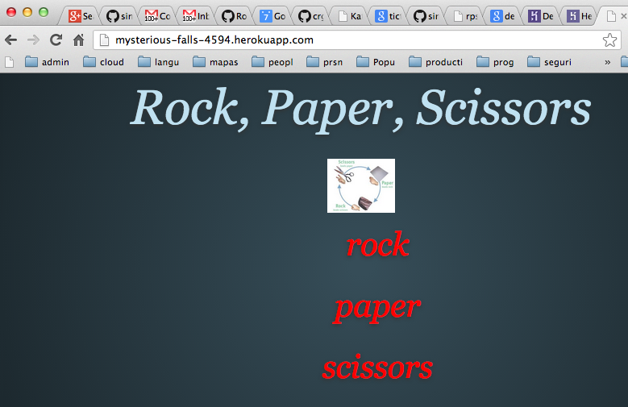

Sig: Logging Sup: Heroku Ant: Heroku Con:
La primera vez te pedirá las credenciales:
$ heroku login Enter your Heroku credentials. Email: adam@example.com Password: Could not find an existing public key. Would you like to generate one? [Yn] Generating new SSH public key. Uploading ssh public key /Users/adam/.ssh/id_rsa.pubLa clave la cargas en la sección
SSH keys add key de
https://dashboard.heroku.com/account
[~/rack/rack-rock-paper-scissors(test)]$ heroku --version heroku-gem/2.39.4 (x86_64-darwin11.4.2) ruby/1.9.3
[~/local/src/ruby/sinatra/rack/rack-rock-paper-scissors(test)]$ which heroku /Users/casiano/.rvm/gems/ruby-1.9.3-p392/bin/heroku [~/local/src/ruby/sinatra/rack/rack-rock-paper-scissors(test)]$ ruby -v ruby 1.9.3p392 (2013-02-22 revision 39386) [x86_64-darwin11.4.2]Seguramente tienes que instalar una versión del toolbet por cada versión de Ruby con la que quieras usarlo.
Para desinstalarlo:
$ gem uninstall heroku --all
~/.heroku/client.
~/.heroku/client
before loading the system-installed version.
[~/local/src/ruby/sinatra/rack/rack-rock-paper-scissors(master)]$ heroku --help Usage: heroku COMMAND [--app APP] [command-specific-options] Primary help topics, type "heroku help TOPIC" for more details: addons # manage addon resources apps # manage apps (create, destroy) auth # authentication (login, logout) config # manage app config vars domains # manage custom domains logs # display logs for an app ps # manage dynos (dynos, workers) releases # manage app releases run # run one-off commands (console, rake) sharing # manage collaborators on an app Additional topics: account # manage heroku account options certs # manage ssl endpoints for an app db # manage the database for an app drains # display syslog drains for an app fork # clone an existing app git # manage git for apps help # list commands and display help keys # manage authentication keys labs # manage optional features maintenance # manage maintenance mode for an app pg # manage heroku-postgresql databases pgbackups # manage backups of heroku postgresql databases plugins # manage plugins to the heroku gem regions # list available regions stack # manage the stack for an app status # check status of heroku platform update # update the heroku client version # display version
Heroku recognizes an app as Ruby by the existence of a Gemfile.
Even if your app has no gem dependencies, you should still create
an empty Gemfile in order that it appear as a Ruby app.
In local testing, you should be sure to run your app in an isolated
environment (via bundle exec or an empty RVM gemset), to make sure
that all the gems your app depends on are in the Gemfile.
In addition to specifying dependencies, you’ll want to specify your Ruby Version using the ruby DSL provided by Bundler.
Here’s an example Gemfile for a Sinatra app:
source "https://rubygems.org" ruby "2.0.0" gem 'sinatra', '1.1.0'
[~/sinatra/rockpaperscissors(master)]$ cat Gemfile source 'https://rubygems.org' gem 'sinatra' gem 'haml' gem 'puma'
Run bundle install to set up your bundle locally.
$ bundle install
Gemfile.lock file, which should be added
to your git repository.
Gemfile.lock ensures that your deployed
versions of gems on Heroku match the version installed locally on
your development machine.
Process types are declared via a file named Procfile placed in the root of your app.
Its format is one process type per line, with each line containing:
<process type>: <command>The syntax is defined as:
<process type> – an alphanumeric string, is a name for your command, such as
web,
worker,
urgentworker,
clock, etc.
<command> – a command line to launch the process, such as rake jobs:work.
web.rb using Ruby.
Here’s a Procfile:
web: bundle exec ruby web.rb -p $PORT
web: bundle exec rackup config.ru -p $PORT
[~/sinatra/rockpaperscissors(spec)]$ cat config.ru #\ -s puma require './rps' run RockPaperScissors::App
web, and the command needed
to run it.
web is important here.
It declares that this
process type will be attached to the HTTP routing stack of Heroku,
and receive web traffic when deployed.
$ foreman start 16:39:04 web.1 | started with pid 30728 18:49:43 web.1 | [2013-03-12 18:49:43] INFO WEBrick 1.3.1 18:49:43 web.1 | [2013-03-12 18:49:43] INFO ruby 2.0.0p247 (2013-06-27 revision 41674) [x86_64-linux] 18:49:43 web.1 | [2013-03-12 18:49:43] INFO WEBrick::HTTPServer#start: pid=30728 port=5000
curl
or a web browser, then Ctrl-C to exit.
Config vars saved in the .env file of a project directory will be
added to the environment when run by Foreman.
For example we can
set the RACK_ENV to development in your environment.
$ echo "RACK_ENV=development" >>.env $ foreman run irb > puts ENV["RACK_ENV"] > developmentDo not commit the
.env file to source control.
It should only be used for local configuration.
Véase la descripción de los contenidos del Procfile en 13.1.
Procfile is recommended for greater control and flexibility over your app.
$ git add .
$ git commit -m "Procfile"
$ git push heroku
...
-----> Procfile declares process types: web, worker
Compiled slug size is 10.4MB
-----> Launching... done
http://strong-stone-297.herokuapp.com deployed to Heroku
To git@heroku.com:strong-stone-297.git
* [new branch] master -> master
$ git init $ git add . $ git commit -m "init"
[~/sinatra/rockpaperscissors(master)]$ git remote -v origin git@github.com:crguezl/sinatra-rock-paper-scissors.git (fetch) origin git@github.com:crguezl/sinatra-rock-paper-scissors.git (push)
Create the app on Heroku:
[~/sinatra/rockpaperscissors(master)]$ heroku create Creating mysterious-falls-4594... done, stack is cedar http://mysterious-falls-4594.herokuapp.com/ | git@heroku.com:mysterious-falls-4594.git Git remote heroku added
[~/sinatra/rockpaperscissors(spec)]$ cat Rakefile desc "start server using rackup ..." task :default do sh "rackup" end require 'rspec/core/rake_task' RSpec::Core::RakeTask.new do |task| task.rspec_opts = ["-c", "-f progress"] task.pattern = 'spec/**/*_spec.rb' end
[~/sinatra/rockpaperscissors(master)]$ git remote -v heroku git@heroku.com:mysterious-falls-4594.git (fetch) heroku git@heroku.com:mysterious-falls-4594.git (push) origin git@github.com:crguezl/sinatra-rock-paper-scissors.git (fetch) origin git@github.com:crguezl/sinatra-rock-paper-scissors.git (push)
Deploy your code:
[~/sinatra/rockpaperscissors(master)]$ git push heroku master
Counting objects: 31, done.
Delta compression using up to 4 threads.
Compressing objects: 100% (29/29), done.
Writing objects: 100% (31/31), 9.09 KiB, done.
Total 31 (delta 11), reused 0 (delta 0)
-----> Ruby/Rack app detected
-----> Installing dependencies using Bundler version 1.3.2
Running: bundle install --without development:test --path vendor/bundle --binstubs vendor/bundle/bin --deployment
Fetching gem metadata from https://rubygems.org/..........
Fetching gem metadata from https://rubygems.org/..
Installing tilt (1.4.1)
Installing haml (4.0.3)
Installing rack (1.5.2)
Installing puma (2.0.1)
Installing rack-protection (1.5.0)
Installing sinatra (1.4.2)
Using bundler (1.3.2)
Your bundle is complete! It was installed into ./vendor/bundle
Post-install message from haml:
HEADS UP! Haml 4.0 has many improvements, but also has changes that may break
your application:
* Support for Ruby 1.8.6 dropped
* Support for Rails 2 dropped
* Sass filter now always outputs <style> tags
* Data attributes are now hyphenated, not underscored
* html2haml utility moved to the html2haml gem
* Textile and Maruku filters moved to the haml-contrib gem
For more info see:
http://rubydoc.info/github/haml/haml/file/CHANGELOG.md
Cleaning up the bundler cache.
-----> Discovering process types
Procfile declares types -> (none)
Default types for Ruby/Rack -> console, rake, web
-----> Compiled slug size: 1.3MB
-----> Launching... done, v4
http://mysterious-falls-4594.herokuapp.com deployed to Heroku
To git@heroku.com:mysterious-falls-4594.git
* [new branch] master -> master
[~/sinatra/rockpaperscissors(master)]$
You’ve deployed your code to Heroku, and specified the process types in a Procfile.
You can now instruct Heroku to execute a process type.
Heroku does this by running the associated command in a dyno - a lightweight container which is the basic unit of composition on Heroku.
Let’s ensure we have one dyno running the web process type:
$ heroku ps:scale web=1Veamos que dice la ayuda:
$ heroku help ps Usage: heroku ps list processes for an app Additional commands, type "heroku help COMMAND" for more details: ps:restart [PROCESS] # ps:restart [PROCESS] ps:scale PROCESS1=AMOUNT1 ... # ps:scale PROCESS1=AMOUNT1 ... ps:stop PROCESS # ps:stop PROCESS $ heroku help ps:scale Usage: heroku ps:scale PROCESS1=AMOUNT1 ... scale processes by the given amount Example: heroku ps:scale web=3 worker+1
You can check the state of the app’s dynos.
The heroku ps command lists the running dynos of your application:
$ heroku ps === web: `bundle exec ruby web.rb -p $PORT` web.1: up for 9mHere, one dyno is running.
[~/sinatra/sinatra-rock-paper-scissors/sinatra-rockpaperscissors(master)]$ heroku ps Process State Command ------- ----------- ------------------------------------ web.1 idle for 8h bundle exec rackup config.ru -p $P..
We can now visit the app in our browser with heroku open.
[~/sinatra/rockpaperscissors(master)]$ heroku open Opening http://mysterious-falls-4594.herokuapp.com/ [~/sinatra/rockpaperscissors(master)]$

$ heroku ps:scale web=2
$ heroku ps:scale web=1
Heroku treats logs as streams of time-ordered events aggregated from the output streams of all the dynos running the components of your application.
Heroku’s Logplex provides a single channel for all of these events.
View information about your running app using one of the logging commands, heroku logs:
$ heroku logs 2013-03-13T04:10:49+00:00 heroku[web.1]: Starting process with command `bundle exec ruby web.rb -p 25410` 2013-03-13T04:10:50+00:00 app[web.1]: [2013-03-13 04:10:50] INFO WEBrick 1.3.1 2013-03-13T04:10:50+00:00 app[web.1]: [2013-03-13 04:10:50] INFO ruby 2.0.0p247 (2013-06-27 revision 41674) [x86_64-linux] 2013-03-13T04:10:50+00:00 app[web.1]: [2013-03-13 04:10:50] INFO WEBrick::HTTPServer#start: pid=2 port=25410
heroku run command.
bundle exec irb) attached to your local terminal for
experimenting in your app’s environment:
$ heroku run console Running `console` attached to terminal... up, ps.1 irb(main):001:0>
irb has nothing loaded other than the Ruby standard
library. From here you can require some of your application files.
Or you can do it on the command line:
$ heroku run console -r ./web
Rake can be run in an attached dyno exactly like the console:
$ heroku run rake db:migrate
By default, non-Rails apps aren’t given a SQL database.
This is because you might want to use a NoSQL database like Redis or CouchDB, or you don’t need any database at all.
If you need a SQL database for your app, do this:
$ heroku addons:add heroku-postgresql:dev
Gemfile like this:
gem 'pg'
By default your app (Rack) will use Webrick.
This is fine for testing, but for production apps you’ll want to switch to a more robust webserver.
On Cedar, they recommend Unicorn as the webserver.
Casiano Rodríguez León